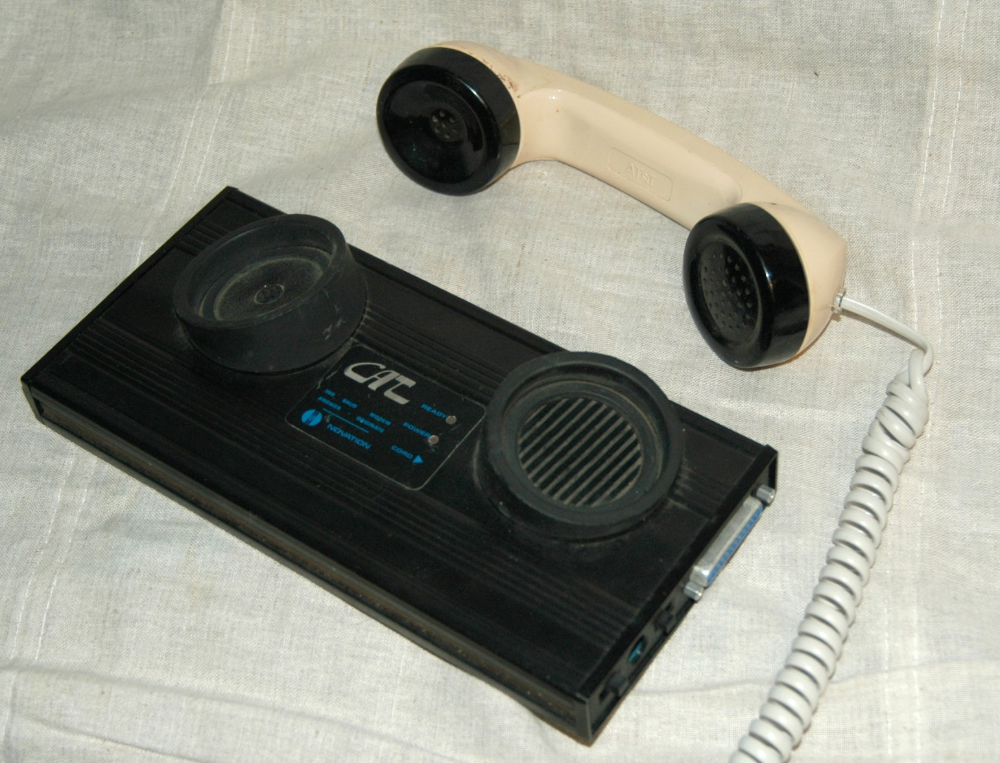

Novation CAT
The acoustic coupler that made the telephone a computer peripheral — one rubber cup at a time

Overview
The Novation CAT was an external 300 bit/s Bell 103-standard modem that connected computers to telephone lines using an acoustic coupler — two rubber cups into which a standard telephone handset was pressed. Released circa 1977 by Novation, Inc., it became one of the most popular early home computer modems and was rebranded by Apple (as the Modem IIA/IIB), Atari (830 Modem), Texas Instruments (TI Phone Interface), and Radio Shack (TRS-80 Telephone Interface II).
Operating the CAT required a deliberate physical ritual: the user manually dialed a number on a telephone, listened through the handset for the remote modem's answer tone, and then pressed the handset into the rubber cups to acoustically couple the earpiece and mouthpiece to the modem's speaker and microphone. There was no automatic dialing, no call progress detection — hanging up meant physically returning the handset to the telephone cradle. This was the standard mode of home computer telecommunication until the Hayes Smartmodem 300 (1981) introduced direct-connect auto-dial/auto-answer operation with the AT command set that would eventually dominate the market.
Novation also produced the Apple-CAT II, an internal direct-connect modem for the Apple II that could generate and detect telephone network tones, making it a favorite among phone phreakers. The company continued producing modems through the early 1980s but was eclipsed by Hayes and eventually disappeared.
Deep dive
Using an acoustic coupler was a multi-sensory experience. You'd pick up the telephone handset, dial the number, and listen — really listen — for the characteristic shriek of the remote modem's answer tone. Only when you heard it would you press the handset into the rubber cups, sealing the acoustic path. If the cups didn't form a good seal, ambient noise would corrupt the data. If you bumped the desk, the handset might shift and drop the connection. This wasn't a frictionless interface — it was a ritual that demanded attention, patience, and a quiet room. The entire session was mediated by the physical presence of the telephone: you couldn't leave it off-hook, you had to be there to hang up, and the handset itself became an extension of the computer.
The acoustic coupler's design was driven by regulatory constraints. Until the Carterfone decision (1968) and subsequent FCC rulings, AT&T's Bell System monopoly prohibited connecting non-Bell equipment directly to the telephone network. Acoustic coupling — converting data to sound and back without any electrical connection — was the legal workaround. Even after direct connection became legal, acoustic couplers remained popular through the late 1970s because they worked with any standard telephone, required no phone jack, and were portable. The Novation CAT's rubber cups were molded to fit the Western Electric Model 500 handset, which was nearly universal in American homes.
The acoustic coupler modem became a visual shorthand for 'hacking' in 1980s popular culture. The most famous depiction is in the 1983 film WarGames, where David Lightman (Matthew Broderick) presses a telephone handset into an acoustic coupler to break into a military computer. The Novation CAT and its clones were the hardware that enabled the BBS (Bulletin Board System) revolution: thousands of hobbyists running dial-up servers from their homes, creating a distributed social network years before the World Wide Web. The physical act of coupling was the universal initiation rite into online culture.
Novation's internal Apple-CAT II modem (for the Apple II's expansion slots) was a remarkable device. Beyond standard modem functions, it could generate and detect telephone network control tones — DTMF, 2600 Hz, MF (blue box) tones, ringing, busy signals, and more. This made it a multi-function telephone hacking tool popular with phone phreakers. Software packages like TSPS, The Cat's Meow, and Phantom Access turned the Apple II into a complete telephone experimentation platform. This dual-use capability — legitimate modem plus tone generator — made the Apple-CAT II one of the most versatile communications peripherals of the early 1980s.
Team & pioneers
- Novation, Inc.. Modem manufacturer based in California; produced the CAT series from ~1977 to early 1980s
- Apple Computer. Rebranded the CAT as Modem IIA and Modem IIB
- Atari, Inc.. Rebranded the CAT as Atari 830 Modem
- Radio Shack / Tandy. Rebranded the CAT as TRS-80 Telephone Interface II